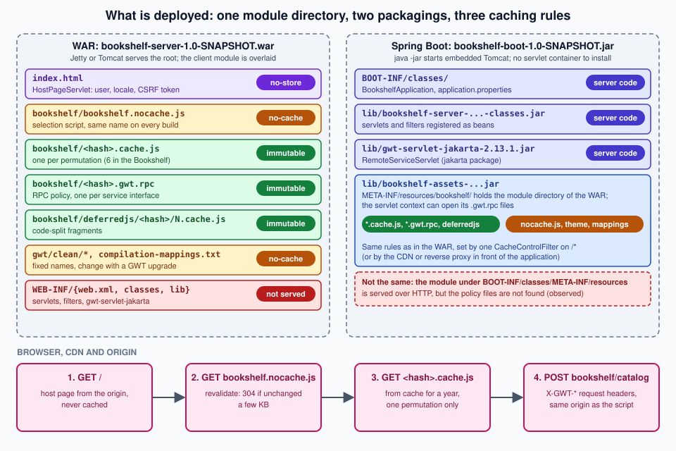

Server Integration & Deployment
|
This content was generated with the assistance of AI and should be verified against the official documentation before being relied on in production. |
This page is written against GWT 2.13.1 (2026-06-19), gwt-maven-plugin 1.3.0, JDK 21 running the compiler with -sourceLevel 17, the Jakarta Servlet 6 stack of the modular-webapp archetype (the Jetty 12.1.10 ee10 Maven plugin) and, for the second packaging, Spring Boot 4.1.1 with its embedded Tomcat 11.0.24.
The GWT facts were checked on 2026-10-08 and the Spring Boot, Tomcat and Docker Hub facts on 2026-10-09.
It is server and build knowledge: nothing here is compiled to JavaScript except the three small client classes of the file-upload and host-page examples.
Every command, header and log line shown comes from a private copy of the Bookshelf scenario of this section, extended with the classes printed below, built with JDK 21 and Maven 3.9.16 and exercised with curl and with headless Chrome 155 driven over the DevTools protocol.
Policy-file names are 32-character content hashes in the real output; in the logs and listings below they are shown as CATALOG_POLICY_HASH and TOKEN_POLICY_HASH, and the session token and upload identifiers as placeholders.
Three things were not run and are marked where they appear: a Tomcat installation (Spring Boot’s embedded Tomcat stands in for it), the Dockerfile (the Docker daemon was not running) and any CDN.
Deploying a GWT application is easy in principle, because the compiler writes ordinary static files, and it goes wrong in a handful of recurring ways, because the GWT-RPC servlet reads some of those static files at run time. The page therefore starts with what exactly is deployed, then shows the same Bookshelf as a WAR and as a Spring Boot jar, and then covers the parts that surround the module directory: the host page, HTTP caching and compression, containers and file upload.
What is deployed
A GWT application consists of four groups of files, and they have different owners and different rules.
| Group | Written by | Served to browsers | Rule |
|---|---|---|---|
The host page ( |
You. Any page that has a script tag for the selection script. |
Yes |
Cache little or not at all. It may carry per-user data. |
The module directory ( |
The GWT compiler, into the |
Yes, except that the server also reads the |
Hashed files forever, fixed names revalidated. |
The server code: servlets, filters, DTO classes |
You, with |
Never |
Lives in |
The RPC library: |
Maven, from the |
Never |
One jar of about 9.6 MiB inside |
What the compiler does not put in the servable directory is as important.
The -deploy directory receives "deployable but not servable" files: the compiler’s own default is WEB-INF/deploy under the -war directory, and gwt-maven-plugin redirects it to ${project.build.directory}/gwt/deploy, outside the WAR (its parameter is deploy).
For the Bookshelf that directory is 6.4 MiB: the symbolMaps and the rpcPolicyManifest.
They are what turns obfuscated stack traces back into Java names (see the Logging page), so keep them with the release, but do not serve them.
The -extra directory holds files that are not intended for deployment at all, such as reports.
The compiler options and the three output directories are described in Compiler & Compilation, the module XML and the host page in Project Structure & Modules and the Maven packagings in Build Tools: Maven & Gradle.

The Bookshelf, built and listed
The scratch Bookshelf has the modules bookshelf-shared, bookshelf-client (packaging gwt-app), bookshelf-server (a war that depends on the client’s WAR, so that Maven’s WAR plugin overlays the module directory onto the server’s static files) and, for this page, bookshelf-assets and bookshelf-boot, which are explained in the Spring Boot section.
One reactor build produces everything:
mvn -B package -DskipTests[INFO] Reactor Summary for bookshelf 1.0-SNAPSHOT:
[INFO] bookshelf .......................................... SUCCESS
[INFO] bookshelf-shared ................................... SUCCESS
[INFO] bookshelf-client ................................... SUCCESS
[INFO] bookshelf-server ................................... SUCCESS
[INFO] bookshelf-assets ................................... SUCCESS
[INFO] bookshelf-boot ..................................... SUCCESS
[INFO] BUILD SUCCESSThe WAR of the server module (after mvn clean package) contains 50 files: 11,888,376 bytes uncompressed and 9,443,734 bytes as a WAR.
With the 32-character hashes replaced by <hash> and equal names counted, it holds:
6 bookshelf/<hash>.cache.js six permutations: locale default, en, es x user.agent gecko1_8, safari
12 bookshelf/deferredjs/<hash>/1.cache.js, 2.cache.js two code-split fragments per permutation
2 bookshelf/<hash>.gwt.rpc one RPC policy per RemoteService interface
1 bookshelf/bookshelf.nocache.js the selection script (7,847 bytes)
1 bookshelf/compilation-mappings.txt which permutation serves which property values
1 bookshelf/bookshelf.devmode.js helper used by development mode
1 bookshelf/clear.cache.gif
8 bookshelf/gwt/clean/... the public path of the Clean theme: two CSS files, six images
2 inline.html, favicon.ico static files of the server module (the host page is a servlet)
1 WEB-INF/web.xml
8 WEB-INF/classes/com/example/bookshelf/server/*.class
2 WEB-INF/lib/gwt-servlet-jakarta-2.13.1.jar, bookshelf-shared-1.0-SNAPSHOT.jar
5 META-INF/: MANIFEST.MF and the pom files of the two modulesSource: GWT — Deploying
Run mvn clean package, not only mvn package: the overlay of the client’s WAR is copied into the server module’s target directory without removing files of earlier builds, and a build made after the client had been recompiled had twelve <hash>.cache.js files for six permutations, the other six being the previous build’s, which a deployment would then carry.
The -deploy directory (not in the WAR) contains the rpcPolicyManifest/manifest.txt that maps each service to its policy file:
# Module bookshelf
# RPC service class, partial path of RPC policy file
com.example.bookshelf.shared.CatalogService, CATALOG_POLICY_HASH.gwt.rpc
com.google.gwt.user.client.rpc.XsrfTokenService, TOKEN_POLICY_HASH.gwt.rpcThe two policy files list the types the server may serialise for each service, with one line per type (the type name, four flags, the type signature and a number); the Bookshelf’s lists Book, BookPage and BookNotFoundException for the catalog and XsrfToken and RpcTokenException for the token service.
The GWT-RPC page explains the file format and the serialisation rules.
For deployment only one fact matters: the server opens these files by name, and a server that cannot open them serialises less than you expect (see the pitfalls table).
Which RPC jar
The server-side RPC classes exist twice. The javax ones are in gwt-servlet, the Jakarta ones are in gwt-servlet-jakarta, in the package com.google.gwt.user.server.rpc.jakarta (verified in the 2.13.1 jar: RemoteServiceServlet, XsrfProtectedServiceServlet, XsrfTokenServiceServlet, RPC, RPCServletUtils).
The client-side interfaces (RemoteService, AsyncCallback, XsrfProtectedService) are in the package com.google.gwt.user.client.rpc in both jars, so the shared code of an application does not change when the container does.
The choice follows the servlet API of the container:
| Container | Servlet API | RPC artifact |
|---|---|---|
Tomcat 9.0 |
4.0 ( |
|
Tomcat 10.1 |
6.0 ( |
|
Tomcat 11.0 (used by Spring Boot 4.1.1 here) |
6.1 |
|
Jetty 12 with the |
Jakarta EE 10 |
|
Tomcat 10.0 implements the Servlet 5.0 API and is not covered by this page.
Both artifacts are managed by the org.gwtproject:gwt BOM at 2.13.1, so the server module declares them without a version:
<dependency>
<groupId>org.gwtproject</groupId>
<artifactId>gwt-servlet-jakarta</artifactId>
</dependency>
<dependency>
<groupId>jakarta.servlet</groupId>
<artifactId>jakarta.servlet-api</artifactId>
<scope>provided</scope>
</dependency>The official guide still says to copy gwt-servlet.jar into war/WEB-INF/lib, which is the Ant-era instruction for the same thing; with Maven the dependency does it.
The 2.11.0 release notes introduced the Jakarta artifacts.
Why the server needs the module directory
When a browser sends an RPC request, the body names the module base URL and the strong name of the policy (see the captured request body in the section about prefixes).
RemoteServiceServlet removes the context path from the path of the module base URL, appends the strong name and .gwt.rpc, and calls ServletContext.getResourceAsStream with the result.
The 2.13.1 source states it in three branches, each with its own log message: the module path must start with the context path of the web application, the file must exist, and it must parse.
If anything fails the servlet logs the error and falls back to a legacy 1.3.3-compatible policy, which allows far fewer types.
Two consequences follow, and the rest of the page is largely about them:
-
the policy files must be reachable through the servlet context of the application that runs the servlet, at the path of the module base URL, even when a CDN or a static web server serves the same files to browsers;
-
the module base URL is whatever URL the selection script was loaded from, so the host page, the static files and the RPC servlets share a path prefix, normally
/<module>/.
The servlet side: web.xml
Servlets for GWT-RPC are declared like any other servlet.
The Developer Guide’s rule is that the <url-pattern> is the module’s output directory followed by the value of @RemoteServiceRelativePath, and that if the module has a rename-to the renamed value must be used because it is the real directory in the WAR.
The Bookshelf’s module is renamed to bookshelf and the catalog interface carries @RemoteServiceRelativePath("catalog"), so the mapping is /bookshelf/catalog.
The same file registers the filters and servlets that the later sections explain:
<?xml version="1.0" encoding="UTF-8"?>
<web-app xmlns="https://jakarta.ee/xml/ns/jakartaee" xmlns:xsi="http://www.w3.org/2001/XMLSchema-instance"
xsi:schemaLocation="https://jakarta.ee/xml/ns/jakartaee https://jakarta.ee/xml/ns/jakartaee/web-app_5_0.xsd"
version="5.0">
<context-param>
<param-name>gwt.xsrf.session_cookie_name</param-name>
<param-value>JSESSIONID</param-value>
</context-param>
<filter>
<filter-name>sessionFilter</filter-name>
<filter-class>com.example.bookshelf.server.SessionFilter</filter-class>
</filter>
<filter-mapping>
<filter-name>sessionFilter</filter-name>
<url-pattern>/bookshelf/xsrf</url-pattern>
</filter-mapping>
<filter>
<filter-name>cacheControl</filter-name>
<filter-class>com.example.bookshelf.server.CacheControlFilter</filter-class>
</filter>
<filter-mapping>
<filter-name>cacheControl</filter-name>
<url-pattern>/*</url-pattern>
</filter-mapping>
<servlet>
<servlet-name>hostPage</servlet-name>
<servlet-class>com.example.bookshelf.server.HostPageServlet</servlet-class>
</servlet>
<servlet-mapping>
<servlet-name>hostPage</servlet-name>
<url-pattern>/index.html</url-pattern>
<url-pattern></url-pattern>
</servlet-mapping>
<servlet>
<servlet-name>upload</servlet-name>
<servlet-class>com.example.bookshelf.server.UploadServlet</servlet-class>
<multipart-config>
<max-file-size>1048576</max-file-size>
<max-request-size>1100000</max-request-size>
<file-size-threshold>65536</file-size-threshold>
</multipart-config>
</servlet>
<servlet-mapping>
<servlet-name>upload</servlet-name>
<url-pattern>/bookshelf/upload</url-pattern>
</servlet-mapping>
<servlet>
<servlet-name>catalogServlet</servlet-name>
<servlet-class>com.example.bookshelf.server.CatalogServiceImpl</servlet-class>
</servlet>
<servlet-mapping>
<servlet-name>catalogServlet</servlet-name>
<url-pattern>/bookshelf/catalog</url-pattern>
</servlet-mapping>
<servlet>
<servlet-name>xsrfServlet</servlet-name>
<servlet-class>com.google.gwt.user.server.rpc.jakarta.XsrfTokenServiceServlet</servlet-class>
</servlet>
<servlet-mapping>
<servlet-name>xsrfServlet</servlet-name>
<url-pattern>/bookshelf/xsrf</url-pattern>
</servlet-mapping>
<servlet>
<servlet-name>booksRest</servlet-name>
<servlet-class>com.example.bookshelf.server.BooksRestServlet</servlet-class>
</servlet>
<servlet-mapping>
<servlet-name>booksRest</servlet-name>
<url-pattern>/api/books</url-pattern>
</servlet-mapping>
<welcome-file-list>
<welcome-file>index.html</welcome-file>
</welcome-file-list>
</web-app>Points worth reading in that file:
-
gwt.xsrf.session_cookie_nameis the context parameter thatXsrfTokenServiceServletreads to know which cookie identifies the session; XSRF protection of RPC calls is covered by the XSRF, RPC & Server Security page and is mentioned here only because it is configured here. -
The URL pattern with the empty string maps the host page servlet to the context root, the
/index.htmlpattern to the file name, and thewelcome-file-listmakes a request for/reach it. -
<multipart-config>is what turns onParthandling and its size limits for the upload servlet; the numbers are bytes. -
The session filter is mapped to the token servlet only. The first version of the Bookshelf mapped its session filter to
/*, and the effect of that choice on caching is shown in the caching section.
Declaring servlets in the module XML (<servlet path=... class=.../>) is an older mechanism.
The official help page about servlet mappings says that modern GWT applications use it only for tests and that application code should not rely on it; the web.xml above is the single source of truth for a development setup with a servlet container and for production.
A second help topic, "Web App Classpath Problem", explains the warning that the development server of that time (hosted mode) printed when server classes came from the system classpath instead of WEB-INF; the property gwt.nowarn.webapp.classpath silences it, and the fix is to put the classes in WEB-INF/classes and the jars in WEB-INF/lib, which is exactly what a WAR does.
Jetty and Tomcat: the WAR
The WAR is the unit both containers understand, and bookshelf-server already produces it with mvn package.
To try it without installing anything, the Jetty Maven plugin that the archetype pins runs the finished WAR:
mvn -B -pl bookshelf-server org.eclipse.jetty.ee10:jetty-ee10-maven-plugin:12.1.10:run-war -Djetty.http.port=8936[INFO] Started oejs.ServerConnector@...{HTTP/1.1, (http/1.1)}{0.0.0.0:8936}
[INFO] Started oejs.Server@...{STARTING}[12.1.10,sto=0] @381msThis run replaces the jetty:run of the development setup (which serves the code server’s output, see Development Mode & Debugging) with the real packaged files, so it is the closest local test of what a container will see.
Two default behaviours of the plugin turned up in the first run, before any caching rule was added: static responses had no Cache-Control but an Expires: Thu, 01 Jan 1970 00:00:00 GMT header, and the Bookshelf’s session filter (mapped to /* at that point) added a Set-Cookie: JSESSIONID=... header to the selection script and to every .cache.js file.
The first is what this plugin sent in this run and is not something to rely on in production; the second is a deployment bug, because many CDNs and proxies do not cache responses that set cookies unless a rule says so, so check the cookie rules of the CDN you use.
Tomcat
On Tomcat the same WAR is deployed by copying it into the webapps directory, as the official guide’s Tomcat example does (the guide’s application then answers under /MyApp/, named after the WAR).
A Tomcat installation was not run for this page.
What the page did run is the embedded Tomcat 11.0.24 inside the Spring Boot jar below, with the same servlets and the same policy-file lookup, and a non-root context path (/shelf), which is the case that changes the module base URL.
Use Tomcat 10.1 or 11 with gwt-servlet-jakarta; Tomcat 9 needs gwt-servlet and javax.servlet imports in the server classes.
Static files on one server, servlets on another
The Developer Guide’s second example splits the traffic: Apache HTTPD serves everything except WEB-INF/ from its document root and proxies only the RPC URLs to Tomcat with ProxyPass and ProxyPassReverse, so that the browser sees a single origin.
Its reason for deploying the entire WAR to Tomcat is the one found above: servlets may call ServletContext.getResource, and GWT-RPC servlets always need the generated policy file.
The example’s check is still good practice: a GET of the RPC URL on both hosts should answer 405, and a 404 points at the left-hand side of the mapping while "Bad Gateway" points at the right-hand side.
The Bookshelf shows the same 405 (the servlet only handles POST):
curl -s -o /dev/null -D - http://localhost:8936/bookshelf/catalog | grep -iE "^HTTP"HTTP/1.1 405 Method Not AllowedSource: GWT — Deploying RPC
A request that does reach the servlet but is not a GWT-RPC request is rejected by the servlet, which is what a firewall or proxy that rewrites the Content-Type produces:
curl -s -D - -X POST -H 'Content-Type: application/json' -d '{}' http://localhost:8936/bookshelf/catalogHTTP/1.1 500 Server Error
Content-Type: text/plain
The call failed on the server; see server log for detailsException while dispatching incoming RPC call
jakarta.servlet.ServletException: Content-Type was 'application/json'. Expected 'text/x-gwt-rpc'.
at com.google.gwt.user.server.rpc.jakarta.RPCServletUtils.checkContentTypeIgnoreCase (RPCServletUtils.java:479)A prefix in front of the application
A reverse proxy or an ingress that publishes the application under a prefix (/shelf/) and strips it before forwarding breaks the policy lookup, although the application itself looks healthy: the browser’s module base URL contains the prefix, the application’s context path does not, and the servlet then looks for /shelf/bookshelf/<hash>.gwt.rpc.
The run below sends the real token request of the Bookshelf with the module base rewritten to such a path (the request body was captured from Chrome; only the first token changed):
7|0|4|http://localhost:8936/cdn/v42/bookshelf/|TOKEN_POLICY_HASH|com.google.gwt.user.client.rpc.XsrfTokenService|getNewXsrfToken|1|2|3|4|0|xsrfServlet: ERROR: The serialization policy file '/cdn/v42/bookshelf/TOKEN_POLICY_HASH.gwt.rpc' was not found; did you forget to include it in this deployment?
xsrfServlet: WARNING: Failed to get the SerializationPolicy 'TOKEN_POLICY_HASH' for module 'http://localhost:8936/cdn/v42/bookshelf/'; a legacy, 1.3.3 compatible, serialization policy will be used. You may experience SerializationExceptions as a result.The way to avoid it is to keep the prefix in the application: give the application the matching context path (Spring Boot: server.servlet.context-path=/shelf, which the Bookshelf was run with and which worked, because the servlet strips /shelf from the module path before it builds the file name) or do not strip the prefix in the proxy.
When the policy files really live somewhere else, the servlet has a hook: the protected method doGetSerializationPolicy(HttpServletRequest, String moduleBaseURL, String strongName) of RemoteServiceServlet (the Jakarta variant has the same signature) is what the lookup calls, and overriding it is the supported way to load policies from another location.
Overriding it widens what the server will deserialise, so the source of the policy must be as trusted as the application’s own WAR.
Spring Boot
A Spring Boot application replaces the container, the WAR and web.xml with one executable jar and Java configuration, and it serves the compiled module as static content.
Two things behave differently from a WAR, and the second one is the trap.
-
Servlets and filters are beans:
ServletRegistrationBeanandFilterRegistrationBeanregister whatweb.xmlregistered,server.servlet.context-parameters.*properties replace<context-param>, and theMultipartConfigElementof the registration replaces<multipart-config>. -
Static content is served by Spring MVC’s resource handler from the classpath (
/static,/public,/resources,/META-INF/resources) or from the root of the servlet context, as the reference says, but the servlet context is a different lookup: in the runs below it foundMETA-INF/resourcesof a dependency jar and did not find it in the application’s ownBOOT-INF/classesof the executable jar.
The Bookshelf’s application class registers the same five servlets and two filters as the web.xml above (Spring Boot 4.1.1, starter spring-boot-starter-webmvc):
package com.example.bookshelf.boot;
import com.example.bookshelf.server.BooksRestServlet;
import com.example.bookshelf.server.CacheControlFilter;
import com.example.bookshelf.server.CatalogServiceImpl;
import com.example.bookshelf.server.HostPageServlet;
import com.example.bookshelf.server.SessionFilter;
import com.example.bookshelf.server.UploadServlet;
import com.google.gwt.user.server.rpc.jakarta.XsrfTokenServiceServlet;
import jakarta.servlet.MultipartConfigElement;
import org.springframework.boot.SpringApplication;
import org.springframework.boot.autoconfigure.SpringBootApplication;
import org.springframework.boot.web.servlet.FilterRegistrationBean;
import org.springframework.boot.web.servlet.ServletRegistrationBean;
import org.springframework.context.annotation.Bean;
import org.springframework.web.servlet.config.annotation.ViewControllerRegistry;
import org.springframework.web.servlet.config.annotation.WebMvcConfigurer;
@SpringBootApplication
public class BookshelfApplication implements WebMvcConfigurer {
public static void main(String[] args) {
SpringApplication.run(BookshelfApplication.class, args);
}
@Bean
ServletRegistrationBean<CatalogServiceImpl> catalogServlet() {
return new ServletRegistrationBean<>(new CatalogServiceImpl(), "/bookshelf/catalog");
}
@Bean
ServletRegistrationBean<XsrfTokenServiceServlet> xsrfServlet() {
return new ServletRegistrationBean<>(new XsrfTokenServiceServlet(), "/bookshelf/xsrf");
}
@Bean
ServletRegistrationBean<HostPageServlet> hostPage() {
return new ServletRegistrationBean<>(new HostPageServlet(), "/index.html");
}
@Bean
ServletRegistrationBean<BooksRestServlet> booksRest() {
return new ServletRegistrationBean<>(new BooksRestServlet(), "/api/books");
}
@Bean
ServletRegistrationBean<UploadServlet> upload() {
ServletRegistrationBean<UploadServlet> bean = new ServletRegistrationBean<>(new UploadServlet(), "/bookshelf/upload");
// location, maxFileSize, maxRequestSize, fileSizeThreshold: the same numbers as <multipart-config> in web.xml
bean.setMultipartConfig(new MultipartConfigElement("", 1_048_576L, 1_100_000L, 65_536));
return bean;
}
@Bean
FilterRegistrationBean<SessionFilter> sessionFilter() {
FilterRegistrationBean<SessionFilter> bean = new FilterRegistrationBean<>(new SessionFilter(), xsrfServlet());
bean.addUrlPatterns("/bookshelf/xsrf");
return bean;
}
@Bean
FilterRegistrationBean<CacheControlFilter> cacheControl() {
FilterRegistrationBean<CacheControlFilter> bean = new FilterRegistrationBean<>(new CacheControlFilter());
bean.addUrlPatterns("/*");
return bean;
}
/** The context root "/" is the host page servlet. */
@Override
public void addViewControllers(ViewControllerRegistry registry) {
registry.addViewController("/").setViewName("forward:/index.html");
}
}Source: Spring Boot — Add a Servlet, Filter, or Listener to an Application: Using a Spring Bean, Spring Boot — Init Parameters
application.properties holds the two settings that cannot be code:
server.port=8936
server.servlet.context-parameters.gwt.xsrf.session_cookie_name=JSESSIONIDSource: Spring Boot — Init Parameters
Spring Security, if it is added, brings its own request filters and its own CSRF protection for state-changing requests, including the RPC POST requests; that interaction was not tested here, and the Spring Security page of the Spring Boot section is the place to start.
Where the module directory goes
The first attempt copied the client’s WAR contents into target/classes/META-INF/resources of the Boot module (a maven-dependency-plugin unpack execution in prepare-package).
The jar built, started, served every file and showed an empty catalog: the server log held the policy error of the first pitfall.
The cause is the one in the second point above.
Spring MVC found the files on the classpath and sent them to the browser, so bookshelf.nocache.js and the .gwt.rpc files all answered 200, but RemoteServiceServlet asks the servlet context, and the servlet context of the embedded Tomcat does not expose BOOT-INF/classes/META-INF/resources of an executable jar:
xsrfServlet: ERROR: The serialization policy file '/bookshelf/TOKEN_POLICY_HASH.gwt.rpc' was not found; did you forget to include it in this deployment?
xsrfServlet: WARNING: Failed to get the SerializationPolicy 'TOKEN_POLICY_HASH' for module 'http://localhost:8936/bookshelf/'; a legacy, 1.3.3 compatible, serialization policy will be used. You may experience SerializationExceptions as a result.
Exception while dispatching incoming RPC callSource: Spring Boot — Static Content
(The same two lines, and the SerializationException that follows them, appear when the policy files are deleted from a deployed WAR; that run is in the pitfalls table.)
The fix that needs no code is to package the module directory as the META-INF/resources of its own jar and make that jar a dependency of the application.
The bookshelf-assets module does only that:
<dependencies>
<dependency>
<groupId>${project.groupId}</groupId>
<artifactId>bookshelf-client</artifactId>
<version>${project.version}</version>
<type>war</type>
<scope>provided</scope>
</dependency>
</dependencies>
<build>
<plugins>
<plugin>
<groupId>org.apache.maven.plugins</groupId>
<artifactId>maven-dependency-plugin</artifactId>
<version>3.8.1</version>
<executions>
<execution>
<id>unpack-gwt-output</id>
<phase>prepare-package</phase>
<goals><goal>unpack</goal></goals>
<configuration>
<artifactItems>
<artifactItem>
<groupId>${project.groupId}</groupId>
<artifactId>bookshelf-client</artifactId>
<version>${project.version}</version>
<type>war</type>
<outputDirectory>${project.build.outputDirectory}/META-INF/resources</outputDirectory>
<excludes>META-INF/**,WEB-INF/**</excludes>
</artifactItem>
</artifactItems>
</configuration>
</execution>
</executions>
</plugin>
</plugins>
</build>
</project>and the Boot module depends on it, on the server module’s classes (the WAR plugin’s attachClasses option produces the classes jar) and on nothing from the client:
<dependency>
<groupId>org.springframework.boot</groupId>
<artifactId>spring-boot-starter-webmvc</artifactId>
</dependency>
<dependency>
<groupId>${project.groupId}</groupId>
<artifactId>bookshelf-server</artifactId>
<version>${project.version}</version>
<classifier>classes</classifier>
<exclusions>
<exclusion>
<groupId>${project.groupId}</groupId>
<artifactId>bookshelf-client</artifactId>
</exclusion>
</exclusions>
</dependency>
<dependency>
<groupId>${project.groupId}</groupId>
<artifactId>bookshelf-assets</artifactId>
<version>${project.version}</version>
</dependency>Source: Spring Boot — Static Content
With that layout the jar (30,639,967 bytes, mostly Spring and the 9.6 MiB RPC jar) starts, the catalog loads and the log has no policy error. Both the server classes and the RPC library are on the classpath of the application, so nothing else is needed:
mvn -B -pl bookshelf-boot -am package -DskipTests
java -jar bookshelf-boot/target/bookshelf-boot-1.0-SNAPSHOT.jartitle = Bookshelf - guest
rows = Estantería | Catálogo | Administración | 1-10 of 25 | Título Autor Ejemplares | The Pragmatic Programmer | Andrew Hunt | ...(The two lines are the result of loading / in headless Chrome and reading the page title and the visible text: the host page servlet answered, the module loaded, the XSRF token and the first catalog page came through RPC. The text is Spanish because the Chrome of the machine sends a Spanish Accept-Language, which the host page servlet honours.)
With --server.servlet.context-path=/shelf the same jar served the same page at /shelf/, the module base URL became http://localhost:8936/shelf/bookshelf/ and the catalog loaded, with no policy error.
Spring Boot’s spring.web.resources.chain.strategy.content.enabled (content-hash version strategy) rewrites resource URLs that Spring generates in templates; it does nothing for GWT, whose file names are already hashes and are written into bookshelf.nocache.js by the compiler.
The plain GET handlers of the other pages of the Spring Boot section (REST controllers, security, configuration) work next to these servlets unchanged; the starting points are Getting Started with Spring Boot, REST APIs with Spring MVC and WebFlux and Spring Security.
Dynamic host pages
The host page is the only part of a GWT application that is HTML you write, and it can be produced by a servlet instead of a file.
The official article "Dynamic Host Page" gives the reasons.
The module’s JavaScript is large, so an application that shows nothing to anonymous visitors should not send it to them; and an RPC call in onModuleLoad to fetch the user’s name costs a second round trip right after the first.
It lists four techniques: a static host page with an RPC call, a security constraint in web.xml, a servlet as host page and a template-based host page (JSP in the article), and its recommendation is to authenticate before the selection script is served and to write the initial data into the page.
Any template engine does the job; the Thymeleaf section of this site covers one, and the servlet below needs none.
Source: GWT — Article: Dynamic Host Page
The Bookshelf’s HostPageServlet does three things: it creates the session (the JSESSIONID cookie that the XSRF token servlet derives its token from), it writes a CSRF token for plain endpoints and the user and locale as JSON, and it sets the response headers that a per-user page needs:
package com.example.bookshelf.server;
import jakarta.servlet.http.HttpServlet;
import jakarta.servlet.http.HttpServletRequest;
import jakarta.servlet.http.HttpServletResponse;
import jakarta.servlet.http.HttpSession;
import java.io.IOException;
import java.security.SecureRandom;
import java.util.Base64;
/** Serves the GWT host page with the user, the locale and a CSRF token already in it. */
public class HostPageServlet extends HttpServlet {
static final String CSRF_ATTRIBUTE = "bookshelf.csrf";
private static final SecureRandom RANDOM = new SecureRandom();
@Override
protected void doGet(HttpServletRequest req, HttpServletResponse resp) throws IOException {
HttpSession session = req.getSession(true); // also creates the JSESSIONID the XSRF servlet needs
String csrf = (String) session.getAttribute(CSRF_ATTRIBUTE);
if (csrf == null) {
byte[] bytes = new byte[32];
RANDOM.nextBytes(bytes);
csrf = Base64.getUrlEncoder().withoutPadding().encodeToString(bytes);
session.setAttribute(CSRF_ATTRIBUTE, csrf);
}
// without an Accept-Language header getLocale() is the server's default locale, so test the header itself
String accept = req.getHeader("Accept-Language");
String locale = accept != null && "es".equals(req.getLocale().getLanguage()) ? "es" : "en";
String user = req.getRemoteUser() == null ? "guest" : req.getRemoteUser();
resp.setContentType("text/html");
resp.setCharacterEncoding("UTF-8");
resp.setHeader("Cache-Control", "no-store"); // per-user data and a token: never cache
resp.setHeader("Vary", "Accept-Language"); // the locale below depends on it
resp.getWriter().write("""
<!doctype html>
<html lang="%s">
<head>
<meta charset="UTF-8">
<title>Bookshelf</title>
<meta name="gwt:property" content="locale=%s">
<meta name="csrf-token" content="%s">
<script type="application/json" id="bookshelf-initial-data">{"user":%s,"locale":"%s"}</script>
<script src="bookshelf/bookshelf.nocache.js"></script>
</head>
<body>
<noscript>Bookshelf needs JavaScript.</noscript>
</body>
</html>
""".formatted(locale, locale, ScriptJson.htmlAttribute(csrf), ScriptJson.quote(user), locale));
}
}Source: GWT — Article: Dynamic Host Page
The page it sends (the token replaced by the placeholder CSRF_TOKEN_PLACEHOLDER; the real value is 43 random URL-safe characters per session; the Accept-Language header was en-US):
<!doctype html>
<html lang="en">
<head>
<meta charset="UTF-8">
<title>Bookshelf</title>
<meta name="gwt:property" content="locale=en">
<meta name="csrf-token" content="CSRF_TOKEN_PLACEHOLDER">
<script type="application/json" id="bookshelf-initial-data">{"user":"guest","locale":"en"}</script>
<script src="bookshelf/bookshelf.nocache.js"></script>
</head>
<body>
<noscript>Bookshelf needs JavaScript.</noscript>
</body>
</html>Some decisions in that servlet are worth stating:
-
The locale is chosen on the server from the
Accept-Languageheader and written as thegwt:propertymeta tag, so the selection script picks the right permutation without a second request (see Internationalization for thelocaleproperty);Vary: Accept-Languagetells caches that the page depends on the header. Without the header,getLocale()returns the server’s default locale (the development machine’s Spanish in this run), which is why the servlet tests the header itself. -
Cache-Control: no-store: the page contains a per-session token and per-user data. The heavy files stay cacheable because they are separate requests. -
The data block is
type="application/json", which no browser executes, so it works under a Content Security Policy that forbids inline scripts. The official article instead assigns a global variable in an inline script, which needs a nonce or'unsafe-inline'. -
Nothing user-controlled is concatenated into HTML or JavaScript without escaping, which is the next point.
Reading the data on the client
The client reads the data block and the meta tag in HostPage, with JSONParser.parseStrict (module com.google.gwt.json.JSON, which the User module does not include) and MetaElement; if the block is absent it falls back to the official article’s technique, Dictionary, which reads a global JavaScript object:
package com.example.bookshelf.client;
import com.google.gwt.dom.client.Document;
import com.google.gwt.dom.client.Element;
import com.google.gwt.dom.client.MetaElement;
import com.google.gwt.dom.client.NodeList;
import com.google.gwt.i18n.client.Dictionary;
import com.google.gwt.json.client.JSONObject;
import com.google.gwt.json.client.JSONParser;
import com.google.gwt.json.client.JSONString;
import java.util.MissingResourceException;
/** Data the server wrote into the host page: a JSON data block (preferred) or a global variable. */
public final class HostPage {
private static String user = "unknown";
private static String csrfToken = "";
private HostPage() { }
public static void read() {
csrfToken = meta("csrf-token");
Element block = Document.get().getElementById("bookshelf-initial-data");
if (block != null) {
JSONObject data = JSONParser.parseStrict(block.getInnerText()).isObject();
JSONString name = data.get("user").isString();
user = name == null ? "unknown" : name.stringValue();
return;
}
try {
user = Dictionary.getDictionary("bookshelfInfo").get("user"); // var bookshelfInfo = {...}
} catch (MissingResourceException e) {
user = "unknown";
}
}
public static String user() { return user; }
public static String csrfToken() { return csrfToken; }
private static String meta(String name) {
NodeList<Element> metas = Document.get().getElementsByTagName("meta");
for (int i = 0; i < metas.getLength(); i++) {
MetaElement meta = MetaElement.as(metas.getItem(i));
if (name.equals(meta.getName())) {
return meta.getContent();
}
}
return "";
}
}App.onModuleLoad calls HostPage.read() first and sets the document title to "Bookshelf - " + HostPage.user().
Chrome confirmed both paths: / (data block) gave the title Bookshelf - guest, and /inline.html, a static page that only has <script>var bookshelfInfo = { "user" : "inline-guest" };</script>, gave Bookshelf - inline-guest through Dictionary.
A Dictionary name that is not defined throws MissingResourceException with the message Cannot find JavaScript object with the name 'bookshelfInfo', and one that is not an object throws '...' is not a JavaScript object and cannot be used as a Dictionary.
Escaping: the article’s example is not safe
The article’s example writes the user’s e-mail address into the page as "email" : " followed by the raw value.
With a value such as x</script><script>alert(1)</script> that closes the script element and starts another, so any value that comes from a user must be escaped for the context it is written into.
For JSON in a script element that means escaping <, > and & (as <, >, &) and the two line separators U+2028 and U+2029, as well as the usual quote and backslash:
package com.example.bookshelf.server;
/** JSON string literals that are safe inside an HTML script element. */
final class ScriptJson {
private ScriptJson() { }
static String quote(String s) {
StringBuilder sb = new StringBuilder("\"");
for (int i = 0; i < s.length(); i++) {
char c = s.charAt(i);
switch (c) {
case '"': sb.append("\\\""); break;
case '\\': sb.append("\\\\"); break;
case '<': sb.append("\\u003c"); break; // no "</script" and no "<!--" can survive
case '>': sb.append("\\u003e"); break;
case '&': sb.append("\\u0026"); break;
case '
': sb.append("\\u2028"); break;
case '
': sb.append("\\u2029"); break;
default:
if (c < 0x20) {
sb.append(String.format("\\u%04x", (int) c));
} else {
sb.append(c);
}
}
}
return sb.append('"').toString();
}
static String htmlAttribute(String s) {
return s.replace("&", "&").replace("\"", """).replace("<", "<").replace(">", ">");
}
}Source: GWT — Article: Dynamic Host Page
The unit test ScriptJsonTest (part of the 6 server tests that pass) prints what the two approaches write for the hostile value:
naive : {"user":"x</script><script>alert(1)</script><!--"}
quoted: {"user":"x</script><script>alert(1)</script><!--"}Source: GWT — Article: Dynamic Host Page
On the client side the data goes into the page with setText, never setHTML, and the SafeHtml & XSS page covers the cases where HTML must be built.
CSRF tokens in the host page
There are two kinds of token and they are not interchangeable.
-
GWT-RPC’s own protection: a service that extends
XsrfProtectedServicerejects calls without a token that theXsrfTokenServicehanded out for the current session cookie. The Bookshelf’sClientFactory.initXsrffetches it before the first call (see the log of the pitfalls section for the case where this fails). This is the subject of the XSRF, RPC & Server Security page. -
A token for plain servlets: the upload servlet above is not an RPC service, so it needs its own. The host page servlet generates 32 random bytes with
SecureRandom, stores them in the session and writes them into thecsrf-tokenmeta tag; the form sends them back as a field and the servlet compares them in constant time withMessageDigest.isEqual.
The token is only as good as the session around it: the cookie flags (HttpOnly, Secure, SameSite) are container configuration. In this run Spring Boot’s Tomcat sent JSESSIONID=...; Path=/; HttpOnly and the Jetty plugin sent JSESSIONID=...; Path=/ without HttpOnly.
Caching, CDNs and static hosting
GWT names files so that the caching rule can be stated per file, and the Developer Guide’s FAQ gives the reasoning.
The .cache.js files are named by the MD5 of their contents, so they never change under the same name and browsers may keep them; the .nocache.js file is regenerated under the same name on every compile and must not be reused without asking the server.
(The FAQ speaks of .cache.html and .nocache.html, which belong to the iframe linker of earlier versions (see Linkers & Bootstrap); with the default linker of 2.13.1 the files are .cache.js and .nocache.js, and the principle is unchanged.)
| Files | Cache-Control |
Reason |
|---|---|---|
|
|
The name contains a hash of the content. |
|
|
Fixed names. |
The host page |
|
It names the selection script, so a stale host page is a stale application. |
RPC and REST responses |
Set by the servlet |
Not static files. |
Source: GWT — FAQ Debugging and Compiling: The .nocache.js File, RFC 9111 — HTTP Caching, RFC 8246 — HTTP Immutable Responses
A servlet filter that applies the table works in any container, and Spring Boot registers it as a bean (see cacheControl() above):
package com.example.bookshelf.server;
import jakarta.servlet.Filter;
import jakarta.servlet.FilterChain;
import jakarta.servlet.ServletException;
import jakarta.servlet.ServletRequest;
import jakarta.servlet.ServletResponse;
import jakarta.servlet.http.HttpServletRequest;
import jakarta.servlet.http.HttpServletResponse;
import java.io.IOException;
/** Sets Cache-Control for the compiler output: hashed files forever, everything else revalidated. */
public class CacheControlFilter implements Filter {
static final String FOREVER = "public, max-age=31536000, immutable";
static final String REVALIDATE = "no-cache";
/** Returns the Cache-Control value for a context-relative path, or null to leave the response alone. */
static String policyFor(String path) {
if (path.endsWith(".cache.js") || path.endsWith(".gwt.rpc")) {
return FOREVER; // file name contains the hash of the content
}
if (path.endsWith(".nocache.js") || path.endsWith(".html") || path.endsWith(".css")
|| path.endsWith(".png") || path.endsWith(".gif") || path.endsWith(".txt")
|| path.endsWith(".js")) {
return REVALIDATE; // fixed name, content changes with each release
}
return null; // servlets (RPC, REST, upload) set their own headers
}
@Override
public void doFilter(ServletRequest req, ServletResponse resp, FilterChain chain)
throws IOException, ServletException {
HttpServletRequest request = (HttpServletRequest) req;
String path = request.getRequestURI().substring(request.getContextPath().length());
String policy = policyFor(path);
if (policy != null) {
((HttpServletResponse) resp).setHeader("Cache-Control", policy);
}
chain.doFilter(req, resp);
}
}Source: RFC 9111 — HTTP Caching
The headers the Bookshelf sent with the filter in place (the Jetty and the Spring Boot runs gave the same values; the hashes shortened):
| Request | Cache-Control |
Other headers |
|---|---|---|
|
|
|
|
|
|
|
|
|
|
|
|
|
|
|
Source: RFC 9111 — HTTP Caching
A conditional request for the selection script, with the Last-Modified value it had sent, got HTTP/1.1 304 Not Modified.
Chrome behaved as the table promises: on a second visit it asked for bookshelf.nocache.js and clean.css and got 304 for both, and it took <hash>.cache.js from its cache without a request:
--- first visit (empty browser cache)
GET 200 /
GET 200 /bookshelf/bookshelf.nocache.js
GET 200 /bookshelf/gwt/clean/clean.css
GET 200 /bookshelf/<hash>.cache.js
POST 200 /bookshelf/xsrf
POST 200 /bookshelf/catalog
--- second visit (normal navigation)
GET 200 /?again=1
GET 304 /bookshelf/bookshelf.nocache.js
GET 304 /bookshelf/gwt/clean/clean.css
GET 200 from cache /bookshelf/<hash>.cache.js
POST 200 /bookshelf/xsrf
POST 200 /bookshelf/catalogSource: RFC 9111 — HTTP Caching
Rolling out a new release
Because the hashed files never change under a name, a new release adds new names and leaves old ones unused. Three rules follow from that and from the policy-file lookup.
-
Upload the hashed files first and the
nocache.jslast, so that no browser ever receives a selection script that points to a file that does not exist yet. -
Keep the previous release’s hashed files and
.gwt.rpcfiles for as long as old browser tabs may be open. A tab that still runs the old build keeps sending the old policy name; if the new WAR has no such file the server logs the "was not found" error above and uses the legacy policy. A change to a service signature gives the old tabIncompatibleRemoteServiceExceptionwith the text "This application is out of date, please click the refresh button on your browser." (from the exception class), which the client should turn into a reload prompt. -
Do not let a session filter touch static paths. In the first run the filter mapped to
/*putSet-Cookieon every static response; a CDN will not store those. The Bookshelf’sweb.xmlandBookshelfApplicationmap it to the token servlet only.
A CDN or static server on another origin
The module base URL is the URL of the script that was loaded.
That has a consequence the CDN case runs into: if the host page loads http://localhost:8937/bookshelf/bookshelf.nocache.js from another origin, GWT.getModuleBaseURL() is that origin, and every RPC call is sent there.
The run (host page on port 8936, a static file server with a copy of the module directory on port 8937):
REQUEST POST http://localhost:8937/bookshelf/xsrf
REQUEST OPTIONS http://localhost:8937/bookshelf/xsrf
FAILED net::ERR_FAILED {"corsError":"PreflightMissingAllowOriginHeader","failedParameter":""}
LOG error Access to XMLHttpRequest at 'http://localhost:8937/bookshelf/xsrf' from origin 'http://localhost:8936' has been blocked by CORS policy: Response to preflight request doesn't pass access control check: No 'Access-Control-Allow-Origin' header is present on the requested resource.(The page loaded, the script ran and the title was set, which shows that the module can be loaded from another origin; only the RPC call failed.) There are two ways out, and the first is simpler:
-
One origin, path-based routing. Put the CDN or the reverse proxy in front of both: the module directory and the static files come from object storage or the CDN’s cache, while the RPC paths (
/bookshelf/catalog,/bookshelf/xsrf,/bookshelf/upload) and the host page are routed to the application. The browser sees one origin, no CORS is involved, and the module base path is the one the application also has. The application must still be able to open the.gwt.rpcfiles at that path through its servlet context, which means they are also in the WAR or the jar, or thatdoGetSerializationPolicyis overridden. -
Two origins. Point each service at the API origin with
ServiceDefTarget.setServiceEntryPoint(...)and configure CORS on the server, including the preflight for the headers GWT-RPC sends (X-GWT-Module-BaseandX-GWT-Permutation) and the content typetext/x-gwt-rpc. The cookie and token rules that follow from a cross-origin call are those of the CORS page of the Security section of this site, What is CORS?. This variant was not built here.
The cloud sections of this site cover the storage and CDN products themselves.
For the static half: S3 Security and Static Hosting with CloudFront and CDN Delivery, Cloud Storage Security and Static Sites with Cloud CDN and Media CDN, and Front Door and CDN.
The rules to configure in all of them are the table above; most CDNs let a rule override the Cache-Control of the origin, and most can compress.
Compression
The compiled JavaScript is the largest file the user downloads, and it compresses well.
Spring Boot compresses nothing by default; one property turns it on, and the mime types it compresses by default include text/javascript, application/javascript and text/css, the response must be at least 2 KB, and application/octet-stream (the type of the .gwt.rpc files) is not in the list.
With --server.compression.enabled=true and Accept-Encoding: gzip the Bookshelf’s files shrank as follows:
| File | Plain bytes | Gzip bytes | Note |
|---|---|---|---|
|
7,847 |
3,431 |
|
|
269,976 |
91,131 |
|
|
1,415 |
1,415 |
not compressed: below 2 KB and not a listed mime type |
|
463 |
463 |
not compressed: below 2 KB |
The equivalents elsewhere are documented by the containers: Tomcat’s HTTP connector has compression (on), compressibleMimeType (default text/html,text/xml,text/plain,text/css,text/javascript,application/javascript,application/json,application/xml) and compressionMinSize (default 2048 bytes), and Jetty has GzipHandler, a handler wrapper installed at server level with setMinGzipSize, setExcludedPaths and addIncludedMethods.
Neither was run for this page.
Two details are specific to GWT:
-
RemoteServiceServletcompresses its own responses. When the request accepts gzip and the payload is longer than 256 bytes it writesContent-Encoding: gzipitself;shouldCompressResponseis the protected method to override. Configure the container’s compression for static content and do not rely on it for RPC. -
The old
.cache.htmlwrapper existed for compression: the FAQ explains that some browsers did not handle compressed pure JavaScript files correctly. With.cache.jsfiles that reason is gone and every current browser handles it.
Docker packaging
Packaging a GWT application in a container changes little, and the GWT-specific parts are three. The general mechanics are in the Docker section of this site: Dockerfile Fundamentals, Build Cache and Multi-Stage Builds, Java and Spring Boot Images and Image Best Practices and Supply-Chain Security.
-
Compile in the build stage, ship only the result. The GWT compiler needs a JDK, Maven and
gwt-dev(a large dependency), and it takes seconds to minutes; the runtime image needs a JRE and one jar. A multi-stage build keeps the compiler out of the image. -
The JVM flag for exceptions. On Java 17 and later a server-side exception that has to be serialised makes the RPC call fail unless the JVM opens
java.langto the unnamed module (upstream issue gwtproject/gwt#9793). The Bookshelf’sgetBook(999)call throws the checkedBookNotFoundException; without the flag Chrome received500 text/plainand with it200 application/json. The flag therefore belongs in the image’sENTRYPOINT. -
Writable storage for uploads and a path prefix are configuration of the container, not of GWT: a volume for the upload directory and, if an ingress adds a prefix, the context path discussed above.
java.lang.reflect.InaccessibleObjectException: Unable to make field private java.lang.String java.lang.Throwable.detailMessage accessible: module java.base does not "opens java.lang" to unnamed module @<id>Source: GWT — issue 9793
The Dockerfile that follows is a pattern: it was not built because the Docker daemon was not running when this page was prepared.
The jar it packages was run directly with the same --add-opens option on the java -jar command line.
The image tags exist on Docker Hub (maven:3.9-eclipse-temurin-21 and eclipse-temurin:21-jre, checked 2026-10-09).
# syntax=docker/dockerfile:1
FROM maven:3.9-eclipse-temurin-21 AS build
WORKDIR /src
COPY . .
RUN --mount=type=cache,target=/root/.m2 \
mvn -B -pl bookshelf-boot -am package -DskipTests
FROM eclipse-temurin:21-jre
RUN useradd --system --uid 10001 bookshelf
USER 10001
WORKDIR /app
COPY --from=build /src/bookshelf-boot/target/bookshelf-boot-1.0-SNAPSHOT.jar app.jar
ENV SERVER_PORT=8080
EXPOSE 8080
ENTRYPOINT ["java", "--add-opens", "java.base/java.lang=ALL-UNNAMED", "-jar", "app.jar"]A WAR in a Tomcat or Jetty base image works the same way (copy it to webapps/ROOT.war or the Jetty equivalent); the Spring Boot jar was chosen because it was the variant that could be run for this page.
Behind Kubernetes the usual pieces apply: an Ingress routes /bookshelf/catalog, /bookshelf/xsrf and the host page to the application (and, optionally, the module directory to a static origin, as in the CDN section), health probes decide readiness, and a rolling update of a Deployment is exactly the situation of the rollout rules above: during the update two versions of the application answer, and an open tab of the old version must still find its policy file.
On the managed container platforms see Cloud Run, Container Apps and App Service.
The App Engine tutorial, as history
The official deployment page ends with "Deploying on Google App Engine", and the tutorial "Deploy to GAE" belongs to the StockWatcher series.
It is worth reading once to see how deployment was done when GWT 2.x was new, and it should not be followed today.
What the tutorial prescribes, from the page itself: the Google Plugin for Eclipse or an Ant build.xml, a hand-written WEB-INF/appengine-web.xml with an <application> element for the application ID, the App Engine development server started through com.google.appengine.tools.development.gwt.AppEngineLauncher as GWT’s development-mode server, appcfg.sh update war to upload, Java source level 1.5 in the javac task, and the datastore with JDO and DataNucleus byte-code enhancement.
The dynamic host page article uses the App Engine Users API for the login check in the same way.
What carries over is the structure: a WAR (or a jar) with the module directory, web.xml, and servlets.
What does not: the toolchain, the descriptor, the upload command and the storage API.
Google’s current documentation of the Java runtime for App Engine’s standard environment describes a managed Java runtime (its text gives Java 21 as the example version) that updates patch releases automatically, and its tooling is described there, not in the GWT guide.
The Spring Boot jar or the Docker image of this page is what such a platform would be given; no App Engine deployment was run for this page.
Server-side file upload
GWT has no upload widget of its own beyond the browser’s: FileUpload is a file input and FormPanel submits a form, with a file, as a classic multipart POST into a hidden iframe.
The Bookshelf uses it to upload a cover image from the admin panel, which is the part of the page reached through GWT.runAsync (a code-split fragment, see Code Splitting):
package com.example.bookshelf.client.view;
import com.example.bookshelf.client.HostPage;
import com.google.gwt.core.client.GWT;
import com.google.gwt.user.client.ui.Button;
import com.google.gwt.user.client.ui.Composite;
import com.google.gwt.user.client.ui.FileUpload;
import com.google.gwt.user.client.ui.FormPanel;
import com.google.gwt.user.client.ui.Hidden;
import com.google.gwt.user.client.ui.Label;
import com.google.gwt.user.client.ui.VerticalPanel;
/** Admin area; reached only through GWT.runAsync, so it compiles into its own JavaScript fragment. */
public class AdminPanel extends Composite {
public AdminPanel() {
VerticalPanel p = new VerticalPanel();
p.add(new Label("Admin area (loaded on demand)"));
FormPanel form = new FormPanel();
form.setAction(GWT.getModuleBaseURL() + "upload"); // .../bookshelf/upload
form.setMethod(FormPanel.METHOD_POST);
form.setEncoding(FormPanel.ENCODING_MULTIPART); // required for FileUpload
FileUpload file = new FileUpload();
file.setName("file"); // the part name the servlet asks for
Button send = new Button("Upload cover");
Label status = new Label();
status.getElement().setId("upload-status");
VerticalPanel fields = new VerticalPanel();
fields.add(new Hidden("_csrf", HostPage.csrfToken())); // from <meta name="csrf-token">
fields.add(file);
fields.add(send);
form.setWidget(fields);
send.addClickHandler(e -> {
if (file.getFilename().isEmpty()) {
status.setText("Choose a file first");
} else {
form.submit();
}
});
form.addSubmitCompleteHandler(e -> {
String results = e.getResults(); // body.innerHTML of the hidden iframe
status.setText(results == null ? "unknown" : results);
});
p.add(form);
p.add(status);
initWidget(p);
}
}What each piece does, with the facts from the 2.13.1 source:
-
FormPanel.setEncoding(ENCODING_MULTIPART)andsetMethod(METHOD_POST)are required for a file input to be sent;FormPanelalso hasENCODING_URLENCODEDandMETHOD_GET. -
FileUpload.setNamegives the part its name. A file input without a name is not sent by browsers, which is the usual reason for a servlet that "receives nothing". -
Hiddencarries extra fields. The CSRF token is one. -
The panel must stay attached until the submission completes, as the Javadoc of
submit()and ofSubmitHandlersays; removing it from the page early means no event. -
SubmitCompleteEvent.getResults()is theinnerHTMLof the hidden iframe’s body (the implementation readsiframe.contentWindow.document.body.innerHTML), ornullif it could not be read, for instance after a submission to another domain.
That last point decides what the server should return.
Chrome renders a text/plain response in a pre element, so the status label showed:
<pre style="word-wrap: break-word; white-space: pre-wrap;">OK UPLOAD_ID_PLACEHOLDER</pre>The sample shows the wrapper as text with setText on purpose.
A real client should match the result against a strict pattern (for instance OK ([0-9a-f-]{36})) and never put server output into the page as HTML.
(The identifier is a random UUID that the server generated; it is replaced by a placeholder here.)
The servlet
The upload servlet is the Jakarta Servlet Part API with the limits of <multipart-config>; no extra library is needed (the book’s servlet used the Apache Commons FileUpload library, which was the standard answer when the Servlet API had no multipart support).
It does the five things every upload endpoint must do:
/** Stores a cover image or a PDF. The size limits come from the multipart-config element in web.xml. */
public class UploadServlet extends HttpServlet {
private Path directory;
@Override
public void init() throws ServletException {
try {
String configured = getServletConfig().getInitParameter("upload.dir");
directory = (configured == null ? Files.createTempDirectory("bookshelf-uploads") : Path.of(configured))
.toAbsolutePath().normalize();
Files.createDirectories(directory);
} catch (IOException e) {
throw new ServletException(e);
}
}
@Override
protected void doPost(HttpServletRequest req, HttpServletResponse resp) throws IOException, ServletException {
resp.setContentType("text/plain");
resp.setCharacterEncoding("UTF-8");
resp.setHeader("X-Content-Type-Options", "nosniff");
resp.setHeader("Cache-Control", "no-store");
// 1. authentication and authorisation would be checked here, on the server (placeholder: any session)
HttpSession session = req.getSession(false);
if (session == null) {
reply(resp, HttpServletResponse.SC_UNAUTHORIZED, "ERROR no-session");
return;
}
// 2. CSRF: the token travels in a form field and must equal the one stored in the session
Part csrfPart;
Part file;
try {
csrfPart = req.getPart("_csrf");
file = req.getPart("file");
} catch (IllegalStateException | ServletException e) {
// the container enforces max-file-size and max-request-size and reports a part that is too large this way
log("upload rejected: " + e);
reply(resp, isTooLarge(e) ? 413 : HttpServletResponse.SC_BAD_REQUEST, isTooLarge(e) ? "ERROR too-large" : "ERROR bad-request");
return;
}
String expected = (String) session.getAttribute(HostPageServlet.CSRF_ATTRIBUTE);
String actual = text(csrfPart);
if (expected == null || actual == null || !MessageDigest.isEqual(
expected.getBytes(StandardCharsets.UTF_8), actual.getBytes(StandardCharsets.UTF_8))) {
reply(resp, HttpServletResponse.SC_FORBIDDEN, "ERROR bad-csrf");
return;
}
// 3. the file itself
if (file == null || file.getSize() == 0) {
reply(resp, HttpServletResponse.SC_BAD_REQUEST, "ERROR no-file");
return;
}
byte[] head = new byte[8];
int read;
try (InputStream in = file.getInputStream()) {
read = in.readNBytes(head, 0, head.length);
}
String extension = detect(Arrays.copyOf(head, read)); // from the content, never from the client's file name or type
if (extension == null) {
reply(resp, HttpServletResponse.SC_UNSUPPORTED_MEDIA_TYPE, "ERROR unsupported-type");
return;
}
// 4. a name the server chose: the client's name is never part of a path
String id = UUID.randomUUID().toString();
Path target = directory.resolve(id + "." + extension).normalize();
if (!target.startsWith(directory)) {
reply(resp, HttpServletResponse.SC_BAD_REQUEST, "ERROR bad-name");
return;
}
try (InputStream in = file.getInputStream()) {
Files.copy(in, target, StandardCopyOption.REPLACE_EXISTING);
}
log("stored upload " + id + "." + extension + " (" + file.getSize() + " bytes)");
reply(resp, HttpServletResponse.SC_OK, "OK " + id);
}
private static boolean isTooLarge(Throwable t) {
for (Throwable c = t; c != null; c = c.getCause()) {
if (c instanceof IllegalStateException) {
return true;
}
}
return false;
}
static String detect(byte[] head) {
if (startsWith(head, 0x89, 'P', 'N', 'G')) {
return "png";
}
if (startsWith(head, 0xFF, 0xD8, 0xFF)) {
return "jpg";
}
if (startsWith(head, '%', 'P', 'D', 'F', '-')) {
return "pdf";
}
return null;
}
private static boolean startsWith(byte[] head, int... magic) {
if (head.length < magic.length) {
return false;
}
for (int i = 0; i < magic.length; i++) {
if ((head[i] & 0xFF) != magic[i]) {
return false;
}
}
return true;
}
private static String text(Part part) throws IOException {
if (part == null || part.getSize() > 256) {
return null;
}
try (InputStream in = part.getInputStream()) {
return new String(in.readAllBytes(), StandardCharsets.UTF_8);
}
}
private static void reply(HttpServletResponse resp, int status, String body) throws IOException {
resp.setStatus(status);
resp.getWriter().write(body);
}
}The rules in that code, in the order of the cheat sheet’s own advice:
-
Authenticate and authorise on the server, before reading the body further. The sample uses "any session" as a placeholder; a real one asks the application’s security layer.
-
CSRF token in a form field, compared in constant time.
-
Limits at two levels: the container’s (
<multipart-config>orMultipartConfigElement: file size, whole-request size, and the size above which a part goes to disk) and the application’s (the token field is capped at 256 bytes intext). The container’s limit protects the server from the body; the application’s protects the rest of the code. -
Never trust the client’s file name or content type. The servlet does not call
getSubmittedFileNameat all and does not usegetContentType; the type is decided from the first bytes of the content (PNG, JPEG and PDF signatures here), and the stored name is a random UUID plus an extension chosen from that type. The path is then checked to be inside the upload directory anyway. -
Store outside the web root, in a directory that nothing serves, and set
X-Content-Type-Options: nosniffon responses; if the files are served back later, serve them from a separate origin or withContent-Disposition: attachment, since an uploaded image may still be a polyglot.
Not covered by the sample, and needed in production: virus scanning, re-encoding images so that a polyglot file is destroyed, per-user quotas and rate limits, and object storage instead of a local directory; the File Storage & Object Stores page covers the last.
What was run
The same two-file upload code ran under both containers, through curl and through Chrome’s file chooser (DevTools DOM.setFileInputFiles on the real FileUpload and a click on the real button):
| Request | Status | Body | Why |
|---|---|---|---|
No session cookie |
401 |
|
|
Session, wrong token |
403 |
|
Token differs from the session’s. |
Right token, |
200 |
|
Stored as |
Right token, the same file sent with the file name |
200 |
|
Stored under a UUID name; |
A shell script named |
415 |
|
The first bytes are not a known signature, whatever the name says. |
A 2 MB file with the limit at 1 MB |
413 |
|
Rejected by the container; see the messages in the pitfalls table. |
A small file in a request whose total is over |
413 |
|
The request limit (1,100,000 bytes) is checked as well. |
With Spring Boot the limits of <multipart-config> go into the MultipartConfigElement of the ServletRegistrationBean (see upload() above), and they are the ones that apply to a raw servlet: the spring.servlet.multipart.* properties configure Spring MVC’s multipart resolver, not this registration.
For files above a few megabytes the classic form has no progress bar and no resume.
The browser APIs that offer progress (XMLHttpRequest with its upload object, and FormData with File) are in Elemental2 (elemental2.dom.XMLHttpRequest, XMLHttpRequestUpload, FormData and File exist in elemental2-dom 1.3.2) and need no server change, since the same multipart request reaches the same servlet; direct-to-object-storage uploads with pre-signed URLs take the file out of the application entirely.
Worked example: the deployed Bookshelf
The pieces above, in the order a release goes out, with the commands that were run.
-
Build everything from clean.
mvn -B clean package -DskipTests(reactor summary above). The server tests, includingScriptJsonTestand the type-detection test of the upload servlet, pass:Tests run: 6, Failures: 0, Errors: 0. -
Check the WAR.
unzip -Z1shows the module directory,WEB-INF/web.xmlandWEB-INF/lib/gwt-servlet-jakarta-2.13.1.jar: 50 files, six<hash>.cache.js, two.gwt.rpcpolicy files. -
Run it on Jetty and check the contract with
curl. The host page answered withCache-Control: no-store; the selection script withno-cacheand, for a conditional request,304; the hashed files withimmutable;GET /bookshelf/catalogwith405; a non-RPCPOSTwith500and the content-type message in the server log. -
Check it in a browser. Headless Chrome loaded
/, set the title from the data block, loaded the catalog (1-10 of 25), opened#admin:(the code-split fragment), selected a file in the realFileUploadand clicked the button. The label showed theprewrapper withOKand an id for a valid file andERROR unsupported-typefor the script. A second visit showed304for the selection script and no request for the permutation. -
Run it as a Spring Boot jar and repeat the
curlchecks of step 3 and the upload checks (curlonly): the same headers, the same catalog in Chrome, the413answers for oversized uploads, and the compression numbers of the table above with the property switched on. The first jar, with the module underBOOT-INF/classes/META-INF/resources, failed the catalog check and is the first pitfall. -
Break it on purpose. Delete the
.gwt.rpcfiles from the unpacked WAR that Jetty serves and reload the page: it showed only the application’s shell, without a catalog, and the log held the errors of the first rows of the pitfalls table. Send the token request with a different module base path and the same errors appear.
The check that matters most after a deployment is the last one in miniature: load the page and read the server log for the words serialization policy.
It is silent when everything is right, and it is the only place the problem is visible, because the browser sees only 500 and "The call failed on the server; see server log for details".
Pitfalls
Every message in the table was reproduced in the runs of this page, or is taken from the 2.13.1 sources, the official guide or the tool’s documentation, as the third column says.
| Symptom or message | Cause | Fix | Seen in |
|---|---|---|---|
|
The |
Deploy the whole module directory with the application; in Spring Boot put it in the |
Reproduced (Jetty WAR, Spring Boot jar) |
|
The legacy policy that replaced the missing one allows almost nothing, so even the token type fails. The catalog page stays empty. |
Fix the previous row first. |
Reproduced |
|
The module base URL in the request is not the path under which the application has its files: a CDN path, a proxy prefix that was stripped, or an old tab. |
Same path inside and outside, a context path that matches the prefix, or a |
Reproduced |
|
The module base URL does not start with the servlet’s context path (an application under |
Make the host page and the application share the context path. |
2.13.1 source |
|
Something that is not the GWT client (a test, a proxy or WAF rewriting the header) posted to an RPC URL. |
Send |
Reproduced |
|
On Java 17 and later, serialising a server exception needs reflection into |
|
Reproduced (500 without the flag, 200 with it) |
|
The script was loaded from another origin, so the module base URL, and every RPC call, points there. |
Route the RPC paths to the application on the page’s origin, or set the service entry points and CORS. |
Reproduced |
An HTTP |
The |
Compare the pattern with the path in the browser’s network log. |
Official guide |
|
The service interface has no |
Add the annotation. |
Official guide and source |
|
An open tab of an old release called a service whose methods or types changed. |
Show a reload prompt in |
2.13.1 source |
Users get an old application after a release |
|
Revalidate it on every use and purge it on deploy. |
Official FAQ |
The CDN never hits its cache for the JavaScript |
The responses carry |
Map session creation to the dynamic paths only. |
Reproduced (first Jetty run) |
|
The servlet set its content type and then the container threw (a too-large upload), so Spring Boot tried to render its JSON error page into a |
Catch the container’s exception in the servlet, as |
Reproduced |
|
A part is over |
|
Reproduced |
|
The request is over |
As above. |
Reproduced |
The host page is Spanish for a visitor without |
|
Test the header yourself and pick a default. |
Reproduced |
|
|
Match with a strict pattern; use |
Reproduced |
The WAR has twice as many |
|
|
Reproduced |
An unexpected |
User data was concatenated into the page without escaping (the pattern of the official article’s example). |
|
Test of this page |
Recent changes and where the older material is outdated
-
2.11.0 (2024-01-09): Jakarta artifacts for GWT-RPC and RequestFactory:
gwt-servlet-jakartaand the packagecom.google.gwt.user.server.rpc.jakarta. Applications on Tomcat 10.1 or 11, Jetty 11 or 12 and Spring Boot 3 or later need them; thejavaxclasses still ship for Tomcat 9 and earlier. 2.10.1 and 2.11.0 also stopped serialising JPA and JDO enhanced classes by default, which is why the policy loader above logs a warning or an error for such policies; the GWT-RPC page of this section covers it. -
2.12.0: fixes for Content Security Policy in the linkers and development mode, and workarounds for GWT-RPC payloads under a CSP (release notes); the host page data block above does not need an inline script.
-
2.13.0: the development-mode server defaults to serving only static files, so a real servlet container, as in this page, is what runs the server side in development as well.
-
The official deployment pages still describe the Ant layout (
war/WEB-INF/lib/gwt-servlet.jar,build.xml,ant war),webAppCreator, the.cache.htmlfiles and App Engine’sappcfg.sh. The principles hold; the commands and file names do not. -
GWT in Action is from the era of GWT 1.3 and 1.4. Its deployment chapter explains the Tomcat
webappslayout, how to move the generated scripts into a directory of their own and how to prune files such as the rebind decision files and the history frame, for a compiler that wrotegwt.js,.cache.htmlfiles and the hosted-mode servlet. The compiler of 2.13 writes a single selection script and.cache.jsfiles in a directory, nothing needs pruning, and the output directory is the-warargument. Its upload chapter shows a servlet written with the Apache Commons FileUpload library, which the Servlet 3PartAPI made unnecessary; the advice to store and check what is uploaded still applies and is expanded above. Its hosted-modeweb.xmllisting, with aGWTShellServlet, belongs to a tool that no longer exists.
References
-
GWT — issue 9793: RPC exception serialisation on Java 17 and later
-
Manning — GWT in Action (the first edition, chapters 12 and 16, consulted for the upload and deployment material; the second edition of 2013 was not consulted)